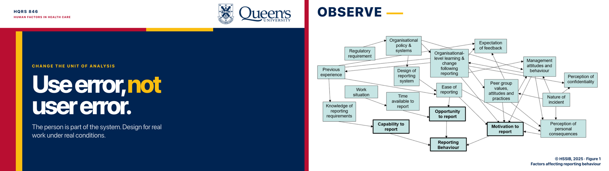
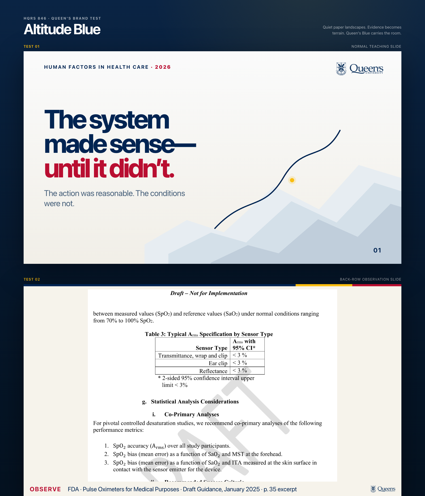
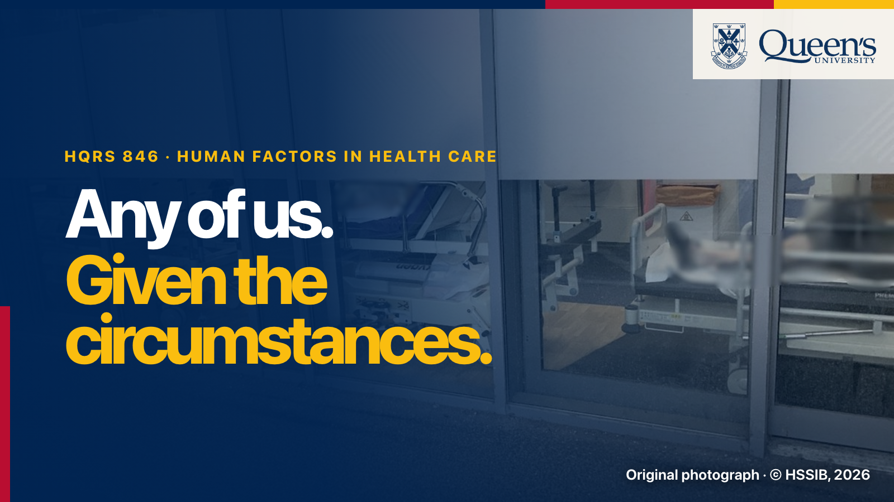
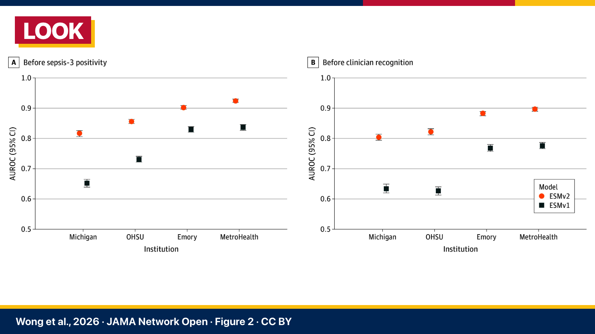

Tricolour Monument
The clearest Queen’s identity at lecture scale: Blue as the stage, Gold as the signal, Red as consequence, and source material enlarged until the room can actually examine it.
HQRS 846 · Queen's identity study
Each test pairs a normal teaching slide with a dedicated back-row observation state. The final decks synthesize their strongest qualities rather than applying one treatment mechanically.

The clearest Queen’s identity at lecture scale: Blue as the stage, Gold as the signal, Red as consequence, and source material enlarged until the room can actually examine it.

The closest echo of CARE-Agent: one-colour Queen’s mark, white sculptural space, a fine path through evidence, and restrained tricolour accents.


The strongest bridge to your existing Jobs/TED vocabulary: large original or documentary imagery, one declarative thought, and an institutional tricolour edge that does not compete with the story.
Monument for thesis and section moments; Cinematic Stage for GPT Image 2 and documentary photography; Altitude Blue restraint for evidence-heavy slides. Dedicated OBSERVE states repeat important source pages at maximum useful size.